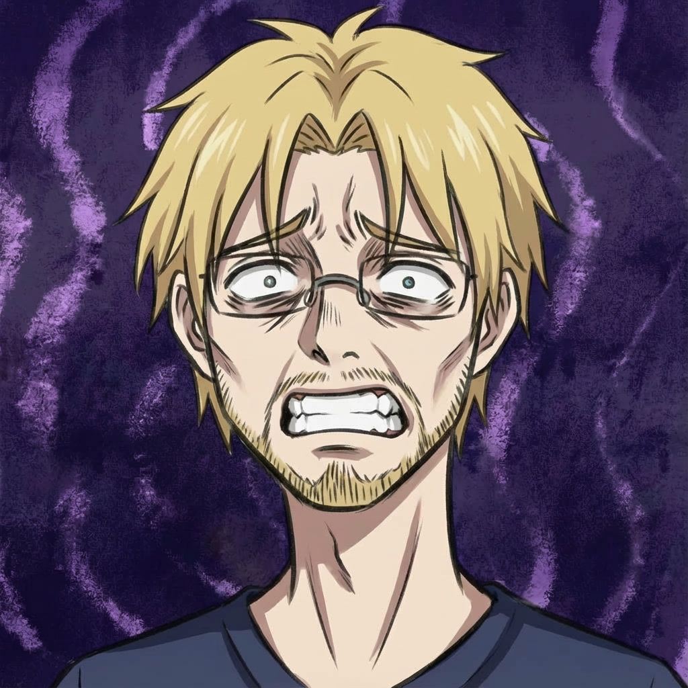

VAMPIRE: THIS CURSED CITY
A grotesque noir comic city cursed by blood, corruption and solitude.
READ NOW
Welcome to the World of Visual Storytelling & Ironic Reflection
A grotesque noir comic city cursed by blood, corruption and solitude.
READ NOW
I am a manga author creating visual stories rooted in personal experience, ironic reflection, and immersive gaming worlds. This website serves as your primary hub for project updates and direct links to all my official platforms.
Vampire: This Cursed City
A dark tale set within the World of Darkness universe (Vampire: The Masquerade).
This project adapts real tabletop RPG sessions into manga form.
Under-Manga
An experimental project offering an ironic look at the creative life.
Russian-speaking audience:
VK Group — the primary and most stable platform for the region.
International audience:
Follow X (Twitter) and Instagram for announcements and releases.
For everyone (Telegram):
All versions of the manga, including uncensored and multi-language files.